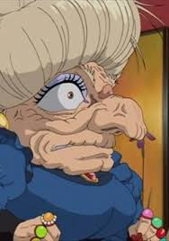

Yubaba
Yubaba (revelada como avó de Chihiro no clímax do filme) é a proprietária do balneário e a principal antagonista do filme. Ela é a idêntica irmã gêmea mais nova de Zeniba e a mãe de Boh. Ela tem como criado um bando de pássaros carinhosamente chamado pelos fãs de Yu-Bird, Haku como seu aprendiz, e é a empregadora de talvez centenas de outros trabalhadores do balneário
Habilidades
Yubaba é uma bruxa extremamente poderosa cuja magia só poderia ser igualada pela de sua irmã gêmea mais velha, Zeniba. Suas capacidades mágicas lhe permitiram "roubar" os nomes de seus trabalhadores, ligando-os em um contrato a seu balneário para sempre, a menos que eles consigam lembrar milagrosamente seus nomes completos (as únicas duas pessoas vistas fazendo isso são Haku e Chihiro, ambos confiando um no outro para se lembrarem). Ela também é vista a ser capaz de cuspir fogo quando enfurecida até certo ponto (visto quando Haku menciona que seu precioso filho, Boh, foi "tirado" dela). Quando ela sai para voar, ela se envolve em um manto e se faz parecer com um pássaro grande.
Personalidade
Como principal antagonista do filme, Yubaba tem uma personalidade extremamente prepotente e intimidadora. Como muitos outros trabalhadores de seu infame balneário, Yubaba é obcecada com o ouro e se mostra disposta a ver o ouro como uma prioridade sobre sua própria família (especialmente Zeniba, por quem ela expressa ódio). No entanto, ela tem, em alguns casos, mostrado uma grande quantidade de cuidados maternais com seu filho, Boh, e é vista completamente devastada quando este último afirma que ele "não vai gostar mais [dela]" se ela continuar a tratar Chihiro Ogino injustamente perto do final do filme.
Ela é bastante egoísta e frugal (quando se trata de seus trabalhadores), tendo para si um escritório imenso com muito espaço desocupado enquanto seus muitos trabalhadores têm um único e apertado quarto como espaço de moradia. Do outro lado, no entanto, ela própria também assume tarefas nojentas e perigosas (como encontrar o Espírito Fedorento ou tentar proteger seus trabalhadores do desenfreio do sem-face). Ela parece altamente profissional nestas tarefas.
Enquanto seus atributos são vistos como incrivelmente antagônicos, Yubaba (ocasionalmente) mostra várias qualidades redentoras, como sua disposição para elogiar Chihiro após seu excelente trabalho em ajudar o Espírito do Rio Sem Nome e suavidade maternal para seu filho, Boh. No final, ela simplesmente coloca ouro acima da maioria das coisas, se mostrando gananciosa e fazendo com que outros discordem dela devido às suas diferentes mentalidades.
Aparência física
Yubaba é a irmã gêmea mais nova de Zeniba e é quase completamente idêntica a ela. Ela tem uma figura desumanamente grande e um monte de cabelos grisalhos penteados em um estilo de "pãozinho". Sua idade nunca é declarada, mas Yubaba é muito enrugada, provavelmente é muito velha. Ela tem olhos castanhos escuros acentuados com uma sombra de olhos lavanda, bem como um nariz torto proeminente chamando a atenção para suas sobrancelhas. Ela também usa brincos dourados idênticos aos de sua irmã gêmea. Ao contrário de sua irmã, Yubaba não é mostrada com óculos no filme.